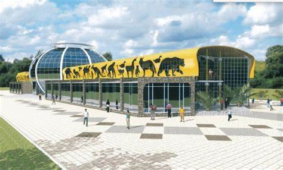

<!DOCTYPE html>
<html lang="ru">
<head>
    <meta charset="UTF-8">
    <meta name="viewport" content="width=device-width, initial-scale=1.0">
    <title>Карта Караганды</title>
    <link rel="stylesheet" href="https://unpkg.com/leaflet/dist/leaflet.css" />
    <style>
        #map { height: 100vh; }
        .leaflet-popup {
            max-width: 300px;
            font-size: 14px;
            padding: 10px;
        }
        .popup-image {
            width: 100%;
            height: auto;
            border-radius: 5px;
        }
    </style>
</head>
<body>
    <div id="map"></div>
    <script src="https://unpkg.com/leaflet/dist/leaflet.js"></script>
    <script>
        var map = L.map('map').setView([49.8028, 73.1027], 12); // Координаты Караганды
        
        L.tileLayer('https://{s}.tile.openstreetmap.org/{z}/{x}/{y}.png', {
            attribution: '&copy; OpenStreetMap contributors'
        }).addTo(map);

        var locations = [
            { lat: 49.806, lng: 73.102, desc: '<br><b>Центральный парк Караганды</b><br>Адрес: ул. Центральная, 50<br>Открыт с 9:00 до 22:00<br>Центральный парк города, место для прогулок, пикников и отдыха с детьми.' },
            { lat: 49.799, lng: 73.104, desc: '<br><b>Гостиница Чайка</b><br>Адрес: пр. Республики, 34<br>Телефон: +7 (7212) 55-55-55<br>Популярная гостиница в Караганде, предлагающая комфортное проживание для туристов и деловых людей.' },
            { lat: 49.815, lng: 73.116, desc: '<br><b>Карагандинский цирк</b><br>Адрес: ул. Крылова, 14<br>Время работы: ежедневно, 10:00 - 18:00<br>Цирк, который устраивает представления для всей семьи, с участием акробатов, клоунов и животных.' },
            { lat: 49.821, lng: 73.129, desc: '<br><b>Карагандинский государственный университет</b><br>Адрес: пр. Строителей, 32<br>Университет, основанный в 1953 году, является одним из крупнейших образовательных учреждений в Казахстане, предлагающим различные программы для студентов.' },
            { lat: 49.805, lng: 73.119, desc: '<br><b>ТРЦ City Mall</b><br>Адрес: ул. Абая, 98<br>Часы работы: с 10:00 до 22:00<br>Современный торгово-развлекательный центр с магазинами, ресторанами и развлекательными зонами.' },
            { lat: 49.796, lng: 73.127, desc: '<br><b>Дворец культуры горняков</b><br>Адрес: ул. Ленинградская, 45<br>Концертный зал и театр, место для культурных мероприятий и праздников.' },
            { lat: 49.810, lng: 73.136, desc: '<br><b>Стадион Шахтер</b><br>Адрес: ул. Спортивная, 3<br>Дом футбольного клуба "Шахтер". Здесь проходят матчи и спортивные события на высшем уровне.' },
            { lat: 49.817, lng: 73.089, desc: '<br><b>Карагандинский областной музей</b><br>Адрес: ул. Чкалова, 25<br>Открыт с 10:00 до 18:00<br>Музей, посвящённый истории и культуре Караганды и области. Экспонаты отражают различные этапы развития региона.' },
            { lat: 49.802, lng: 73.095, desc: '<br><b>Театр музыкальной комедии</b><br>Адрес: ул. Ленина, 12<br>Театральные постановки, опера и мюзиклы. Время работы: с 10:00 до 18:00.' },
            { lat: 49.813, lng: 73.108, desc: '<br><b>Мечеть имени Халифа Алтая</b><br>Адрес: пр. Ленина, 15<br>Часы молитвы: с 7:00 до 20:00<br>Одна из крупнейших мечетей в Караганде, место для поклонения мусульманам.' },
            { lat: 49.801, lng: 73.115, desc: '<br><b>Карагандинский зоопарк</b><br>Адрес: ул. Урицкого, 10<br>Открыт с 9:00 до 18:00<br>Большой зоопарк с разнообразными животными, включая редкие виды.' },
            { lat: 49.809, lng: 73.125, desc: '<br><b>Железнодорожный вокзал</b><br>Адрес: ул. Вокзальная, 1<br>Работает круглосуточно<br>Основной железнодорожный узел Караганды, соединяющий город с другими регионами Казахстана.' },
            { lat: 49.804, lng: 73.131, desc: '<br><b>Автовокзал Караганды</b><br>Адрес: пр. Автостроителей, 2<br>Часы работы: с 5:00 до 23:00<br>Основной автовокзал города, с которого отправляются автобусы в различные регионы.' },
            { lat: 49.798, lng: 73.140, desc: '<br><b>ТРЦ Global City</b><br>Адрес: ул. Тимирязева, 68<br>Часы работы: с 10:00 до 22:00<br>Популярный торгово-развлекательный центр с магазинами, кинотеатром и ресторанами.' },
            { lat: 49.807, lng: 73.147, desc: '<br><b>Карагандинский ботанический сад</b><br>Адрес: ул. Садовая, 5<br>Время работы: с 9:00 до 18:00<br>Ботанический сад с редкими видами растений и зоной для прогулок на свежем воздухе.' },
            { lat: 49.824, lng: 73.132, desc: '<br><b>Карагандинский музей искусств</b><br>Адрес: ул. Ленина, 27<br>Работает с 10:00 до 18:00<br>Музей, представляющий различные виды искусства, включая живопись, скульптуру и декоративно-прикладное искусство.' },
            { lat: 49.813, lng: 73.141, desc: '<br><b>Выставочный зал Караганды</b><br>Адрес: ул. Гагарина, 4<br>Время работы: с 11:00 до 19:00<br>Место для проведения временных выставок и культурных мероприятий.' },
            { lat: 49.810, lng: 73.144, desc: '<br><b>Площадь Караганда</b><br>Адрес: площадь перед КГПУ<br>Открыто ежедневно с 9:00 до 20:00<br>Основная площадь города, окруженная важными зданиями и культурными учреждениями.' },
            { lat: 49.819, lng: 73.151, desc: '<br><b>Монумент горнякам Караганды</b><br>Адрес: ул. Совхозная, 18<br>Памятник в честь горняков, которые играют важную роль в развитии региона.' },
            { lat: 49.803, lng: 73.125, desc: '<br><b>Памятник жертвам политических репрессий</b><br>Адрес: ул. Жданова, 5<br>Памятник в память о жертвах сталинских репрессий, которым были принесены невинные жертвы в прошлом.' },
            { lat: 49.801, lng: 73.102, desc: '<br><b>Вид на город Караганда</b><br>Адрес: городская смотровая площадка<br>С этой точки открывается прекрасный вид на город, его улицы и главные здания.' }
            <!DOCTYPE html>
<html lang="ru">
<head>
    <meta charset="UTF-8">
    <meta name="viewport" content="width=device-width, initial-scale=1.0">
    <title>Карта Караганды</title>
    <link rel="stylesheet" href="https://unpkg.com/leaflet/dist/leaflet.css" />
    <style>
        #map { height: 100vh; }
    </style>
</head>
<body>
    <div id="map"></div>
    <script src="https://unpkg.com/leaflet/dist/leaflet.js"></script>
    <script>
        var map = L.map('map').setView([49.8028, 73.1027], 12); // Координаты Караганды
        
        L.tileLayer('https://{s}.tile.openstreetmap.org/{z}/{x}/{y}.png', {
            attribution: '&copy; OpenStreetMap contributors'
        }).addTo(map);

        var locations = [
            { lat: 49.806, lng: 73.102, desc: 'Центральный парк Караганды' },
            { lat: 49.799, lng: 73.104, desc: 'Гостиница Чайка' },
            { lat: 49.815, lng: 73.116, desc: 'Карагандинский цирк' },
            { lat: 49.821, lng: 73.129, desc: 'Карагандинский государственный университет' },
            { lat: 49.805, lng: 73.119, desc: 'ТРЦ City Mall' },
            { lat: 49.796, lng: 73.127, desc: 'Дворец культуры горняков' },
            { lat: 49.810, lng: 73.136, desc: 'Стадион Шахтер' },
            { lat: 49.817, lng: 73.089, desc: 'Карагандинский областной музей' },
            { lat: 49.802, lng: 73.095, desc: 'Театр музыкальной комедии' },
            { lat: 49.813, lng: 73.108, desc: 'Мечеть имени Халифа Алтая' },
            { lat: 49.801, lng: 73.115, desc: 'Карагандинский зоопарк' },
            { lat: 49.809, lng: 73.125, desc: 'Железнодорожный вокзал' },
            { lat: 49.804, lng: 73.131, desc: 'Автовокзал Караганды' },
            { lat: 49.798, lng: 73.140, desc: 'ТРЦ Global City' },
            { lat: 49.807, lng: 73.147, desc: 'Карагандинский ботанический сад' },
            { lat: 49.818, lng: 73.151, desc: 'Аэропорт Караганды' },
            { lat: 49.789, lng: 73.120, desc: 'Музей жертв политических репрессий' },
            { lat: 49.797, lng: 73.091, desc: 'Парк Победы' },
            { lat: 49.809, lng: 73.097, desc: 'Церковь Святого Иосифа' },
            { lat: 49.803, lng: 73.085, desc: 'Спортивный комплекс Темиртау' },
            { lat: 49.819, lng: 73.112, desc: 'ТРЦ Мега Караганда' },
            { lat: 49.794, lng: 73.106, desc: 'Карагандинский областной драмтеатр' },
            { lat: 49.801, lng: 73.110, desc: 'Дом дружбы народов' },
            { lat: 49.811, lng: 73.123, desc: 'Собор Воскресения Христова' },
            { lat: 49.815, lng: 73.138, desc: 'Кафедральный собор' },
            // Топонимы Караганды
            { lat: 49.825, lng: 73.120, desc: 'Юго-Восток (район)' },
            { lat: 49.780, lng: 73.090, desc: 'Михайловка (район)' },
            { lat: 49.850, lng: 73.100, desc: 'Пришахтинск (район)' },
            { lat: 49.830, lng: 73.140, desc: 'Фёдоровка (район)' },
            { lat: 49.800, lng: 73.135, desc: 'Проспект Бухар Жырау' },
            { lat: 49.810, lng: 73.095, desc: 'Улица Алихана Бокейхана' },
            { lat: 49.795, lng: 73.110, desc: 'Проспект Республики' },
            { lat: 49.785, lng: 73.125, desc: 'Улица Ержанова' },
            { lat: 49.820, lng: 73.085, desc: 'Река Нура' },
            { lat: 49.845, lng: 73.130, desc: 'Фёдоровское водохранилище' }
        ];

        // Добавляем все метки
        locations.forEach(function(location) {
            L.marker([location.lat, location.lng]).addTo(map)
                .bindPopup(location.desc);
        });
    </script>
</body>
</html>
